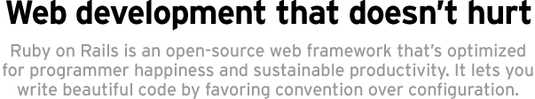

Introduktion och Presentationer
- Peter Marklund
- Vilka är ni?
- Kursens målsättning
- Kursens format
- Frågor
Agenda
| Måndag | Tisdag | Onsdag | Torsdag | Fredag |
|---|---|---|---|---|
|
|
|
|
|
Installation och Utvecklingsmiljö
- Windows: Instant Rails
- Mac OS X:
- Editorer: TextMate (OS X), Emacs, Vim, jEdit, RadRails, Aptana, NetBeans
Rails Bakgrund
- Jason Fried + David Heinemeier Hanson => BaseCamp, Ruby on Rails
- Java, PHP => Ruby
- Hottest Hacker on the Earth, Best Hacker of the Year 2005, Jolt Awards
- Getting Real - Less is more
- Dave Thomas and the Pragmatic Programmers
Rails Elevator Pitch

Rails Filosofi och Styrkor
- Ruby - mindre och läsbarare kod, kortare utvecklingstider, enkelt men kraftfullt, ingen kompileringscykel
- Convention over configuration -> nästan inga configfiler, förutbestämd filstruktur, namnkonventioner -> mindre kod, enklare underhåll
- Best practices: MVC, DRY, testning
- Nästan allting i Rails görs med Ruby (SQL och JavaScript abstraheras ofta bort)
- Bra Ajax stöd. Web services med REST
- Bra community, verktyg, och dokumentation
- Rails är extraherat ur en riktig applikation, inte framtaget av en kommitte
Rails MVC Arkitektur

Demo App
- MVC - Models, Views, Controllers
- Namnkonventioner binder ihop requestcykeln
- Kodgenerator - script/generate, scaffolding, migrations
- Rails kommandorad - script/console
- Testning med rake
- Routes, filter, och callbacks
- Plugins
Biblioteksstruktur
app
controllers
helpers
models
views
layouts
config
environment.rb
environments
development.rb
production.rb
test.rb
routes.rb
db
database.yml
migrations
doc
lib
tasks
log
public
script
test
vendor
plugins
rails
Rake
- Rails rake tasks ligger under railties/lib/tasks. Laddas från Rakefile.
- Lägg egna tasks under lib/tasks
- Användbara tasks (lista med rake --tasks):
- db:migrate
- db:sessions:create
- doc:app
- doc:rails
- log:clear
- rails:freeze:gems
- rails:freeze:edge
- rails:update
- :test (default)
- stats
script/*
- about
- breakpointer
- console
- generate/destroy (models, controllers, scaffold, mailers etc.)
- plugin - installera tillägg
- runner
- server
- script/igoruby/clear_sessions
Environments
- Varje environment har:
- en databasekoppling i database.yml
- en konfigurationsfil under config/environments
- Det är lätt att sätta upp en egen environment, tex för en staging server
- Vilken environment Rails körs i bestäms av ENV['RAILS_ENV']
config/environment.rb
- log level
- hur sessioner ska lagras
- schema format
- pluraliseringsregler
- Gör require på libraries som du behöver i din applikation
Load Paths och Auto Loading
- Rubys load path ligger i $: och används vid require
- Modeller, controllers, vyer, och helpers under app laddas automatiskt
- Klasser under lib laddas också automatiskt
- Du kan lägga till load paths i environment.rb
- Klassnamn och filnamn måste överensstämma
- Modulnamn (namespaces) och biblioteksnamn måste överensstämma
Debugging
- raise @object.inspect
- raise User.instance_methods(false).sort.join(", ")
- <%= debug @object %>
- ./script/console
- Loggfilen
- breakpointer
Ruby
- Interpreterat, reflektivt språk med garbage collection
- Optimerat för människor snarare än datorer
- Kraftfullare än Perl, mer objektorienterat än Python
- Allting är objekt - inga primitiver
- Stark dynamisk typning
- Allting i Ruby är:
- Assignment - binda namn till objekt
- Kontrollstrukturer - if/else, while
- Skicka meddelanden till objekt - metoder
Att definiera en klass
class Person
attr_accessor :first_name, :last_name
def initialize(first_name, last_name)
self.first_name = first_name
self.last_name = last_name
end
def say_goodnight
puts "#{first_name} says good night"
end
end
Metoder
- Metod identifieras av sitt namn endast - ingen overloading på argument
- Klassmetoder och instansmetoder
- public, protected, och private
- object.send(:method_name)
- object.respond_to?(:method_name)
- argument med defaultvärden kommer sist: def my_method(a, options = {})
- namngivna parametrar med hjälp av Hash
- object.method([a, b]*) == object.method(a, b)
Namnkonventioner
- MyClass
- method_name
- MY_CONSTANT = 3.14
- local_variable = 3.14
- @instance_variable
- @@class_variable
- $global_variable
Booleanska Uttryck
- Allt är sant utom nil och false
- false och true är de enda instanserna av FalseClass respektive TrueClass
- booleanska uttryck returnerar det senast evaluerade objektet
- a and b or c
- a && b || c
- a = b or c
- puts a if a = b
Assignment
- a = 1; b = 1
- a = b = 1
- a, b = [1, 2]
- a = b || c
- Gotcha: a = b and c
- a ||= b
Moduler
# Mixins (istället för multipelt arv)
module FullName
def full_name
"#{first_name} #{last_name}"
end
end
class Person
include FullName
end
Person.new("Peter", "Marklund").full_name
# Namespace
module MyApp
class Person
attr_accessor :name
def initialize(name)
self.name = name
end
end
end
MyApp::Person.new("Peter Marklund")
- Exempel: active_record.rb
-->
Allt är objekt
- 2 + 2 ekvivalent med 2+(2) och 2.send("+", 2) (vi anropar metoden + på objektet 2)
- 2.class, 2.methods, 2.inspect
- Time.now.at_beginning_of_month
- 20.minutes.until("2006-12-25 12:00:00".to_time)
- 2.hours.ago
String
- "ruby".upcase + " " + "rails".capitalize
- "time is: #{Time.now}\n second line"
- 'no interpolation "here" #{Time.now}'
- "ruby".size
- %Q{"C" och "Java"} == "\"C\" och \"Java\""
- %q{single 'quoted'} == 'single \'quoted\''
-
<<-DOC This is a here document #{Time.now} DOC
Array
- a = ["Ruby", 99, 3.14]
- a[1] == 99
- a << "Rails"
- ['C', 'Java', 'Ruby'] == %w{C Java Ruby}
- (1..5).each {|x| puts x*x}
- [1,2,3,4,5].map { |x| x**2 }.join(", ")
- [1,2,3,4,5].find_all { |x| x % 2 == 0 }
Hash
- h = {:lang => 'Ruby', :framework => 'Rails'}
- h[:lang] == 'Ruby'
- h[:perl] == nil
- ENV = {"USER"=>"peter", "SHELL"=>"/bin/bash"}
- ENV.each { |k,v| puts "#{k}: #{v}" }
Symboler
- Som strängar fast det finns bara en instans av varje symbol
- link_to :action => 'show', :id => 5
- :symbol.class == Symbol
- :symbol == "symbol".to_sym
- :symbol.to_s == "symbol"
- :symbol.equal?(:symbol) == true
- "symbol".equal?("symbol") == false
if och while
if count > 10
puts "Try again"
elsif tries == 3
puts "You lose"
else
puts "Enter command"
end
while count < 100
puts count
count += 1
end
case
case x
when 0
when 1..5
puts "Second branch"
when 5..10
puts "Third branch"
else
puts "Fourth branch"
end
Blocks/Closures och Proc objekt
def invoke_block
puts "before block"
yield 5
puts "after block"
end
name = "Ruby"
invoke_block { |n| puts "In block with #{name}, received #{n}"}
my_proc = Proc.new { |n| puts "In proc, received #{n}"}
my_proc.call 2
invoke_block &my_proc
Användningsområden för Blocks
- Iteration
[1,2,3].each { |item| puts item } - Resource Management
file_contents = open(file_name) { |f| f.read } - Callbacks
widget.on_button_press { puts "Got Button Press" }
Vanliga strängoperationer
- " ".blank? == true
- var.each_with_index { |line, i| puts "#{i}: #{line}" }
- "abc".scan(/./).each { |char| puts char }
- "we split words".split.join(", ")
- " strip space ".strip
- sprintf("value of %s is %.2f", "PI", 3.1416)
- "I Go Ruby"[2, 2] == "I Go Ruby"[2..4]
Regular Expressions
- puts "matches" if "Ruby" =~ /^(ruby|python)$/i
- pattern = "."; Regexp.new(Regexp.escape(pattern))
- "I Go Ruby"[/(go)/i, 1]
- "I Go Ruby".gsub(/Ruby/, "Bananas")
Exceptions
begin
content = load_blog_data(file_name)
rescue BlogDataNotFound
STDERR.puts "File #{file_name} not found"
rescue BlogDataFormatError
STDERR.puts "Invalid blog data in #{file_name}"
rescue Exception => exc
STDERR.puts "Error loading #{file_name}: #{exc.message}"
Att anropa externa program
- system("ls -l")
- puts `ls -l`
Öppna klasser
class Peter
def say_hi
puts "Hi"
end
end
class Peter
alias_method :say_hi_orig, :say_hi
def say_hi
puts "Before say hi"
say_hi_orig
puts "After say hi"
end
end
Dynamisk Ruby och Metaprogrammering
- method_missing
- const_missing
- eval, instance_eval, class_eval
Ruby vs Java
import java.io.*;
import java.util.*;
public class SortWords {
public static void main(String[] args)
throws IOException {
BufferedReader br = new BufferedReader(new InputStreamReader(System.in));
List al = new ArrayList();
String line = null;
while (null != (line = br.readLine())) {
al.add(line);
}
Collections.sort(al);
System.out.println("sorted:");
for (Iterator it = al.iterator(); it.hasNext();) {
System.out.println(it.next());
}
}
}
Migrations I
- Ett sätt att hantera databasändringar i ett utvecklingsteam
- Skapa migration med script/generate migration och kör den med rake db:migrate
- Migrationfiler är numrerade från ett och uppåt
- Migrationfiler har en up och en down metod
- Metoder: create_table, add_column, change_column, rename_column, rename_table, add_index
- Kolumntyper: binary, boolean, date, datetime, decimal, float, integer, string, text, time, timestamp
- Inställningar för kolumner: :null, :limit, :default
Migrations II
- Exekvera SQL med execute("drop table my_table")
- Du kan använda ActiveRecord klasser, men tänk på att de kan ändra sig över tiden
- Foreign keys får man skapa själv
- Inställningar för tabeller: :primary_key, :id, :force, :options
- Gör backup av ditt produktionsdata innan du kör migrations
- Du kan se hela schemat i db/schema.rb eller db/development_structure.sql
Active Record
Active Record
Sessions
- Undvika att lagra hela Ruby objekt
- Lagra sessioner i databasen: rake db:sessions:create osv